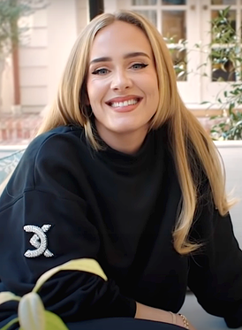

статья по Адель


этого термина существуют и другие значения, см. Адель
Адель
англ. Adele
Адель в 2021 году
Адель в 2021 году
Основная
информация
Имя при рождении Адель Лори Блу Эдкинс
Дата рождения 5 мая 1988[1][2][…] (35 лет)
Место рождения
Тоттенем, Харинги
Страна
Великобритания
Профессии автор-исполнитель, певица, гитаристка, пианистка, барабанщица, музыкант, студийная исполнительница, исполнительный продюсер
Годы активности с 2006
Певческий голос контральто[3]
Инструменты гитара
Жанры Поп, соул[4], голубоглазый соул, R&B[5]
Псевдонимы Adele
Лейблы XL Recordings, Columbia Records, Sony Music Entertainment
Награды
Член ордена Британской империи
«Оскар» (2013)
«Золотой глобус» (2013)
«Грэмми» (2009, 2012-14, 2017)
Логотип
Изображение логотипа
Автограф
Изображение автографа
adele.com
Логотип Викисклада Медиафайлы на Викискладе
Аде́ль Ло́ри Блу Э́дкинс (англ. Adele Laurie Blue Adkins; род. 5 мая 1988, Тоттенем, Англия), более известная мононимно как Аде́ль — британская певица, автор-исполнитель и поэтесса, лауреат 16 премий Грэмми (из 25 номинаций)[6] и первый музыкант, сумевший выиграть в номинациях «Альбом года» (21 и 25), «Запись года» и «Песня года» дважды. Песня «Skyfall» в её исполнении получила премии «Оскар» и «Золотой глобус»[7][8][9].
Окончив в 2006 году BRIT School, Адель заключила контракт с лейблом XL Recordings. В 2007 году победила в номинации «Выбор критиков» на премии Brit и была признана новым лучшим исполнителем на BBC Sound of 2008 по итогам опроса[4]. Её дебютный альбом 19 был выпущен в 2008 году и стал коммерчески успешным. На 51-ой церемонии «Грэмми» в 2009 году она получила награды в номинациях «Лучший новый исполнитель» и «Лучшее женское вокальное поп-исполнение»[4].
В начале 2011 года Адель выпустила свой второй студийный альбом 21; он был хорошо принят критиками и стал коммерчески более успешным, чем дебютный. В 2012 году Адель завоевала множество наград, в том числе шесть премий «Грэмми», включая лучший альбом года, две премии Brit Awards и три награды American Music Awards[10]. Альбом 21 получил 16 платиновых сертификаций в Великобритании и является четвёртым самым продаваемым альбомом в Великобритании за все времена[11], в США он имеет бриллиантовую сертификацию[12]; во всём мире было продано более 31 миллиона его копий[13].
С объёмом продаж более чем в 100 миллионов альбомов, Адель является одним из самых продаваемых артистов в мире[14]. В 2011 и 2012 годах издание Billboard назвало Адель артистом года; в 2012 году она была включена в пятёрку 100 величайших женщин в музыкальной индустрии по версии VH1[15]; в 2012 и 2016 годы журнал Time называл её одной из самых влиятельных женщин в мире. В 2017 году заняла третье место в списке журнала Forbes «30 самых высокооплачиваемых звёзд спорта и шоу-бизнеса моложе 30 лет»[16].
Адель несколько раз занесена в Книгу рекордов Гиннесса[17]. В новом издании Книги зафиксированы три уникальных достижения певицы: она признана первой сольной исполнительницей, чей альбом возглавлял британский чарт 11 недель подряд и 21 неделю — в целом[18], и кроме того — единственной артисткой, два альбома и два сингла которой одновременно попали в первую пятёрку хит-парада. Адель была удостоена «ордена Британской империи». В 2012 году она исполнила песню «Skyfall», которая стала заглавной темой бондианы 007: Координаты «Скайфолл»[19][20]. После этого в связи с рождением ребёнка Адель взяла перерыв на три года и, вернувшись на сцену в 2015 году, выпустила третий студийный альбом 25; альбом стал лучшим в году по продажам и побил множество рекордов на первой неделе продаж[21].
Личная жизнь
В 2011 году Адель начала встречаться с бизнесменом Саймоном Конекки[50]. 19 октября 2012 года у пары родился сын — Анджело Джеймс Конекки[51][52]. По заявлению певицы на одном из концертов в Австралии, в марте 2017, пара тайно поженилась на закрытой церемонии в своём особняке в Лос-Анджелесе[53]. В марте 2017 года они купили дом в Ист-Гринстед в графстве Западный Суссекс на юге Англии[54]. 19 апреля 2019 года Адель объявила об их расставании[55]. При этом в заявлении отмечается, что бывшие супруги обязуются вместе и в любви растить своего сына и просят сохранить их право на неприкосновенность частной жизни, а также оговаривается, что дальнейших комментариев не последует[56]. 12 сентября 2019 года Адель подала на развод[57]. Адель встречается с Ричем Полом[58].
Биография
Родилась 5 мая 1988 года в Лондоне, в районе под названием Тоттенем. Её мать — англичанка Пенни Эдкинс, отец — валлиец Марк Эванс[22]. Эванс ушёл из семьи, когда Адель было два года[23][24]. В возрасте четырёх лет девочка начала петь, и пение стало её любимым занятием[25][26]. В 1997 году Адель вместе с матерью переехала на южное побережье Англии, в Брайтон. В 1999 году они вернулись в Лондон; сначала в Брикстон, а затем в соседний район — Западный Норвуд[27]. Адель впервые выступила на сцене в школе, где исполнила «Rise» (хит Габриэль). К этому времени она находилась под влиянием своих любимых исполнительниц Этты Джеймс и Дасти Спрингфилд, хотя, по собственному признанию, на их пластинки натолкнулась случайно. Позже она поступила в Лондонскую школу исполнительского искусства и технологий в Кройдоне (где обучались также Эми Уайнхаус, Кэти Мелуа, Леона Льюис и Кейт Нэш) и окончила её в мае 2006 года. Спустя два месяца она опубликовала в четвёртом издании онлайнового арт-журнала PlatformsMagazine.com две свои композиции. В октябре 2007 года Адель отправилась в своё первое британское турне. К этому времени на MySpace появилась её демоплёнка, записанная ещё в юности и позже подаренная приятелю, который там её и разместил. Именно благодаря успеху на MySpace Адель получила свой первый контракт. 22 октября 2007 года на лейбле Pacemaker Recordings (принадлежащем Джейми Ти) вышел её дебютный сингл «Hometown Glory», своего рода трибьют Тоттенему, который на iTunes был признан «Синглом недели», а в апреле 2008 года сингл снова попал в британский топ-40, после того как был использован в саундтреке сериала «Skins»[28]. В декабре 2007 года Адель получила награду Brit Awards Critics' Choice Award (вручающуюся артистам, не имеющим ни одного альбома). Последовало подписание нового контракта — с XL Recordings — и выпуск второго сингла «Chasing Pavements», который месяц продержался на 2-м месте британского хит-парада. В январе 2008 года её дебютный альбом 19 уже через неделю после выпуска возглавил национальный хит-парад и за месяц набрал 500-тысячный тираж, получив «платиновый» статус. В марте 2008 года Адель подписала американский контракт с Columbia Records и провела успешные гастроли по США и Канаде. 20 июня 2008 года её дебютный альбом вышел в США[29], поднявшись до десятого места[30]. концерт в Лондоне в поддержку альбома «25», 2016 На концерте в Лондоне в поддержку альбома «25», 2016 В 2010 году Адель была номинирована на «Грэмми» в категории «Лучшее женское поп-исполнение» за сингл «Hometown Glory»[31]. В сентябре (после исполнения на программе The X Factor) её кавер-версия «Make You Feel My Love» Боба Дилана вновь вошла в британские чарты и поднялась до 4-го места[32]. 24 января 2011 года в Великобритании вышел второй студийный альбом певицы 21; американский релиз состоялся 22 февраля[33][34]. Критики отметили некоторые перемены в звучании пластинки: смещение в сторону музыки кантри[35]. Первый сингл из альбома «Rolling in the Deep» на протяжении 7 недель занимал первую строчку Billboard Hot 100, что для британских исполнителей большая редкость. Альбом поднялся на первые места хит-парадов Великобритании (лидировал 6 недель)[36], Ирландии, Германии, Нидерландов, Новой Зеландии, Швейцарии, Австрии, Бельгии, а в марте 2011 года вышел на первое место в Billboard 200[30]. Второй сингл (исполненный певицей на церемонии вручения Brit Awards) «Someone Like You» вышел на 1-е место в Британии[28]. Согласно Official Charts Company, Адель — с двумя синглами и двумя альбомами в соответствующих первых «пятёрках» одновременно — стала второй в истории после The Beatles (1964), кому удалось достичь такого результата[37][38]. В начале ноября 2011 года было объявлено об отмене всех концертов Адель в связи с операцией на голосовых связках. В начале 2012 года песня «Set Fire to the Rain» возглавила национальный хит-парад США — «горячую сотню» журнала «Биллборд». К маю 2012 года альбом 21 разошёлся в Великобритании тиражом 4 274 300 копий, таким образом попав в пятёрку самых успешных релизов за всё время существования британского медиарынка[39]. В мае 2012 года Адель стала триумфатором премии Billboard Music Award, получив 12 наград из 20 номинаций[40]. В 2012 году Адель записала песню «Skyfall» для саундтрека к очередному фильму о Джеймсе Бонде под названием «007: Координаты „Скайфолл“»[41]. За эту работу певица вместе с Полом Эпвортом была удостоена премий «Золотой глобус» и «Оскар» в категории «Лучшая песня» (2013)[42], а также премии «Грэмми» в номинации «Лучшая песня, написанная для кино, телевидения или другого визуального представления» (2014). В 2014 году за заслуги в развитии культуры и искусства Адель была удостоена ордена Британской империи. Третий студийный альбом певицы 25 вышел 20 ноября 2015 года[43]. В 2016 году Адель из четырёх номинаций Brit Awards одержала победу в трёх, а также получила специальную награду за Мировой успех. Итого 4 награды[44]. В 2017 году Адель на премии «Грэмми» одержала победу в пяти номинациях из пяти[45], увеличив число своих наград до 15, а также став первым артистом, сумевшим выиграть в номинациях «Альбом года», «Запись года» и «Песня года» дважды. 1 октября 2021 года на значимых достопримечательностях и зданиях в разных городах по всему миру появились световые проекции и рекламные щиты с цифрой «30», что породило сообщения о том, что это связано с планами певицы и что число «30» будет названием её четвёртого альбома[46]. Вскоре после этого её веб-сайт и аккаунты в социальных сетях совпали по эстетике с проекциями и рекламными щитами, намекая, что новый альбом будет называться 30[47], что впоследствии было подтверждено[48]. 5 октября 2021 года Адель объявила о своем новом сингле «Easy on Me», который вышел 15 октября[49].
награды
альбомы
- (2008)
- (2011)
- (2015)
- (2021)